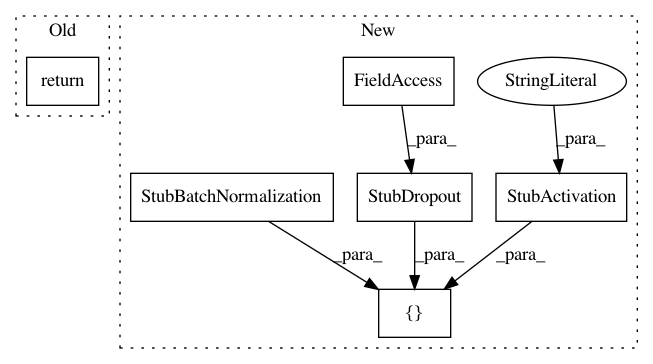

7f30b2403fadc4eaad48ceaf6154a626f477f8c8,autokeras/generator.py,DefaultClassifierGenerator,generate,#DefaultClassifierGenerator#Any#Any#,51
Before Change
output_tensor = ave()(output_tensor)
output_tensor = Dense(self.n_classes, activation="softmax")(output_tensor)
return Model(inputs=input_tensor, outputs=output_tensor)
class RandomConvClassifierGenerator(ClassifierGenerator):
A classifier generator that generates random convolutional neural networks.
After Change
model.inputs = [0]
model.layers.append(StubInput())
for i in range(model_len):
model.layers += [StubBatchNormalization(),
StubActivation("relu"),
StubConv(model_width, kernel_size=3, func=conv),
StubDropout(constant.CONV_DROPOUT_RATE)]
if (i + 1) % pooling_len == 0 and i != model_len - 1:
model.layers.append(StubPooling(func=pool))
model.layers.append(StubGlobalPooling(ave))
In pattern: SUPERPATTERN
Frequency: 3
Non-data size: 6
Instances
Project Name: keras-team/autokeras
Commit Name: 7f30b2403fadc4eaad48ceaf6154a626f477f8c8
Time: 2018-05-26
Author: jin@tamu.edu
File Name: autokeras/generator.py
Class Name: DefaultClassifierGenerator
Method Name: generate
Project Name: keras-team/autokeras
Commit Name: 4b83c1070cebd0d996ba2cc69779dcb66d5d0032
Time: 2018-05-29
Author: jhfjhfj1@gmail.com
File Name: autokeras/generator.py
Class Name: DefaultClassifierGenerator
Method Name: generate
Project Name: keras-team/autokeras
Commit Name: 534a56bb2f790e17160586ed8a72b88d37de9c5a
Time: 2018-05-21
Author: jin@tamu.edu
File Name: autokeras/layer_transformer.py
Class Name:
Method Name: deeper_conv_block